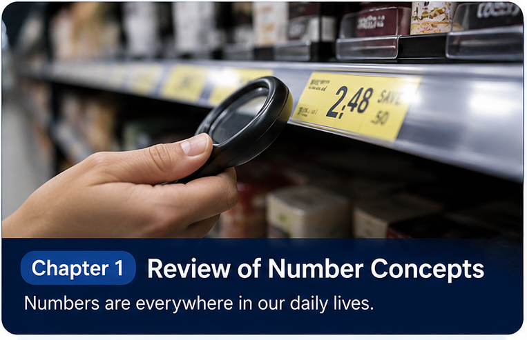
Unit 1
Number, algebra, geometry and data
Unit 2
Fractions, equations, measure and chance
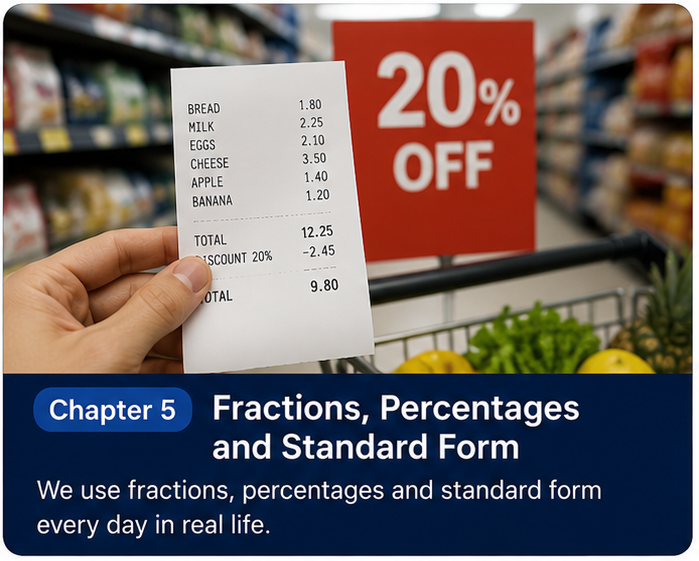
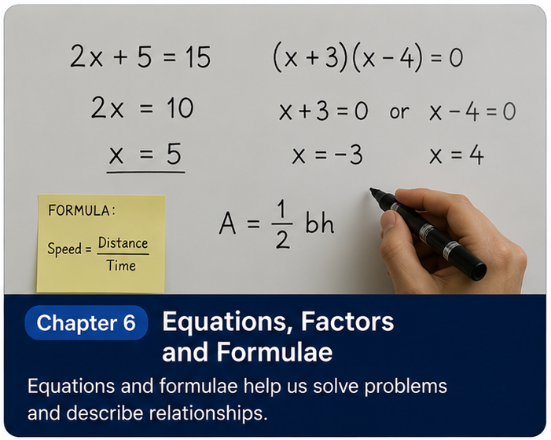
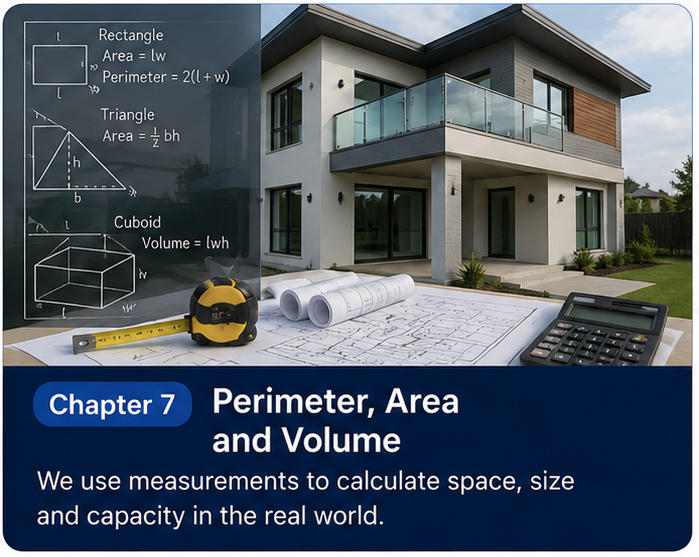
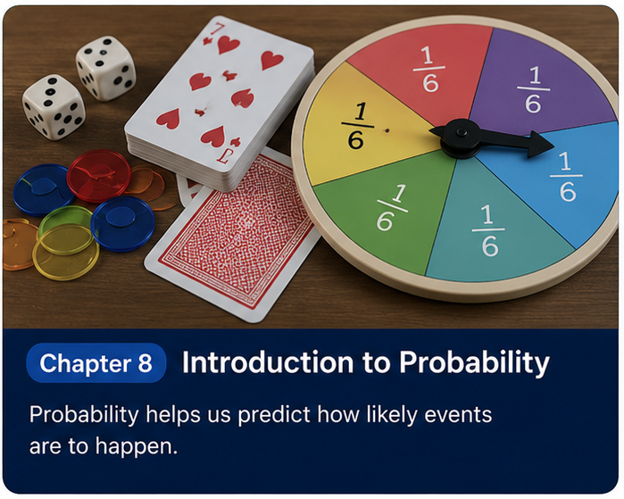
Unit 3
Sequences, graphs, geometry and statistics
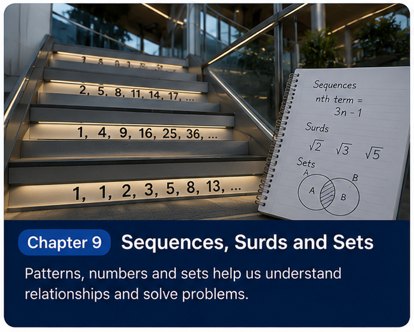
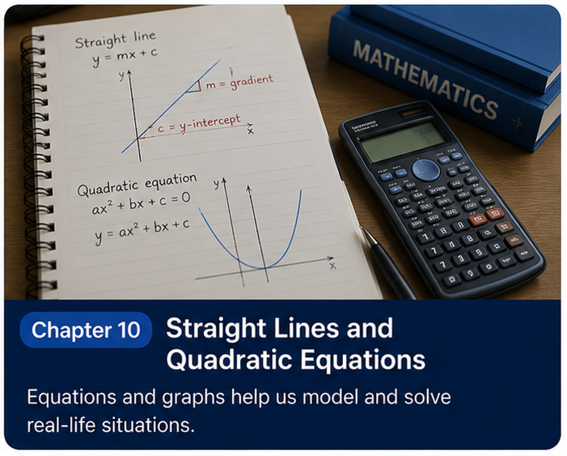
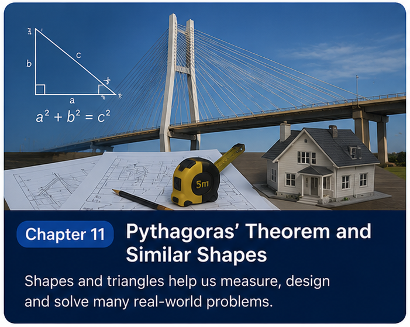
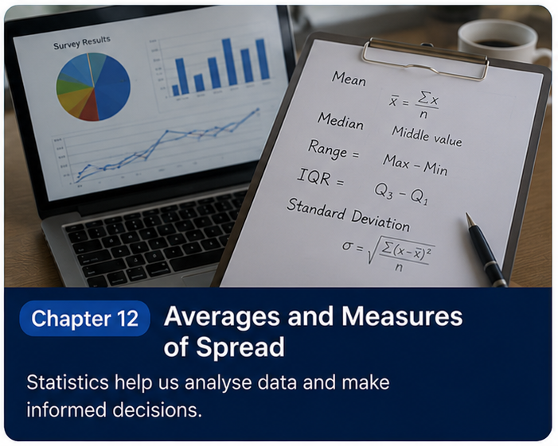
Unit 4
Measurement, equations, trigonometry and data
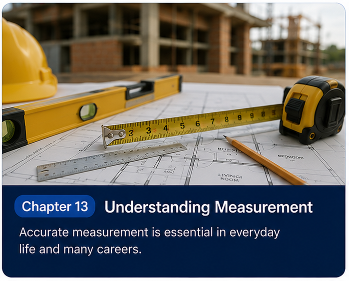
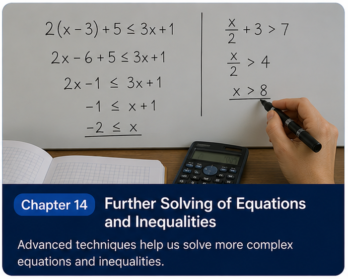
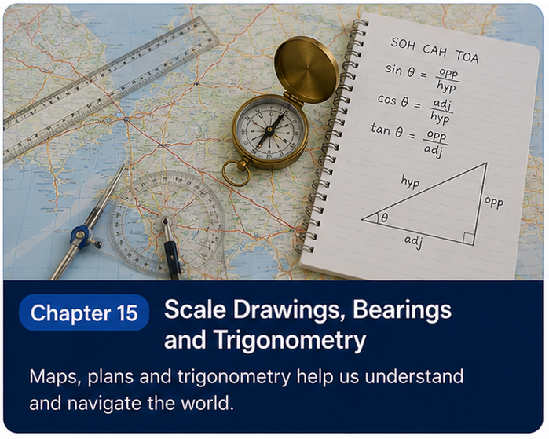
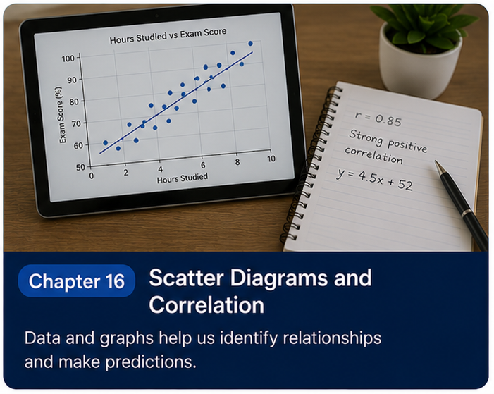
Unit 5
Money, graphs, symmetry and data display
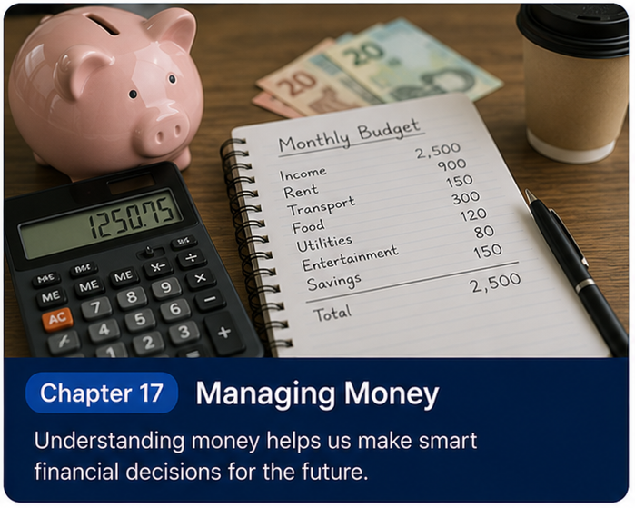
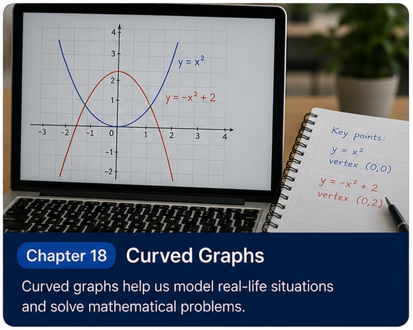
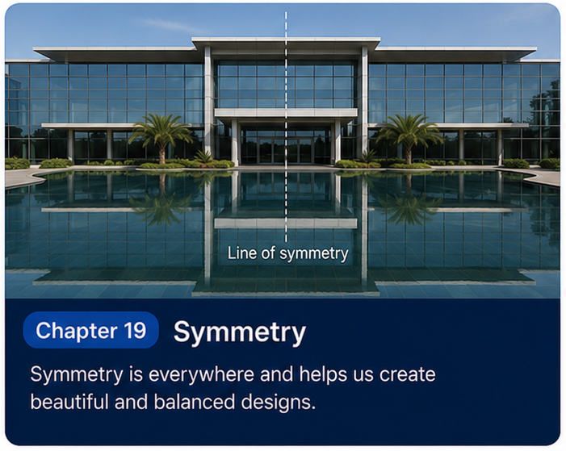
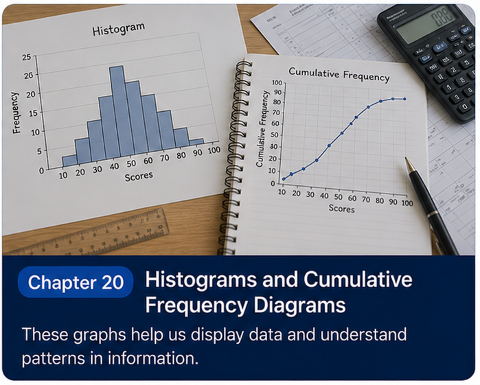
Unit 6
Ratio, functions, vectors and probability
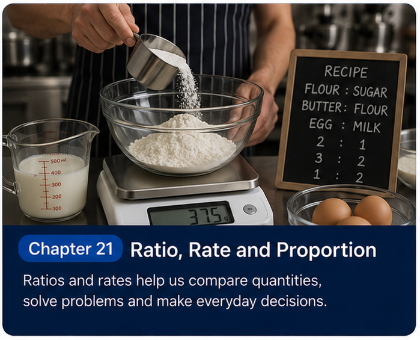
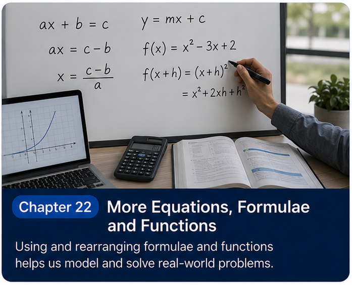
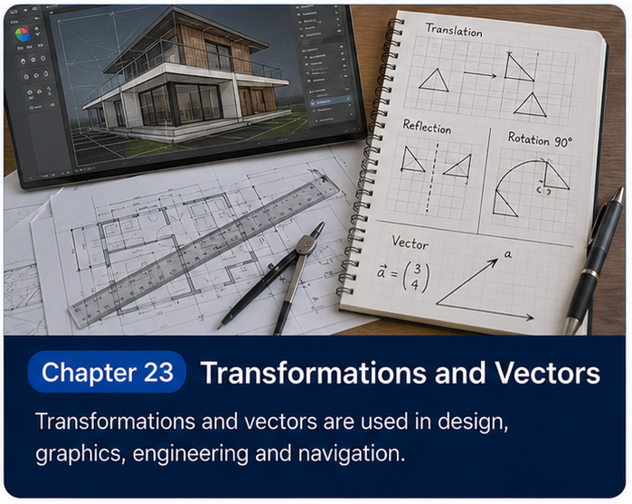
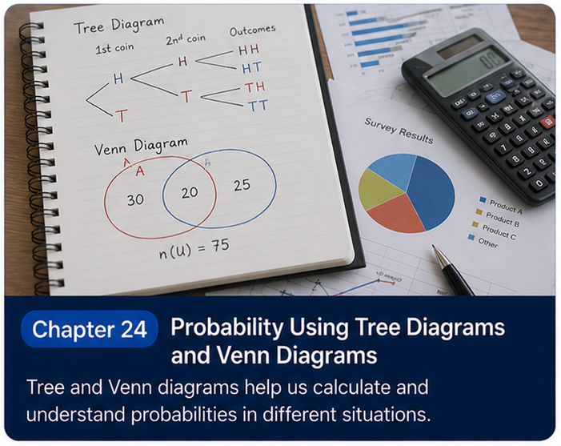
No chapters match that search.